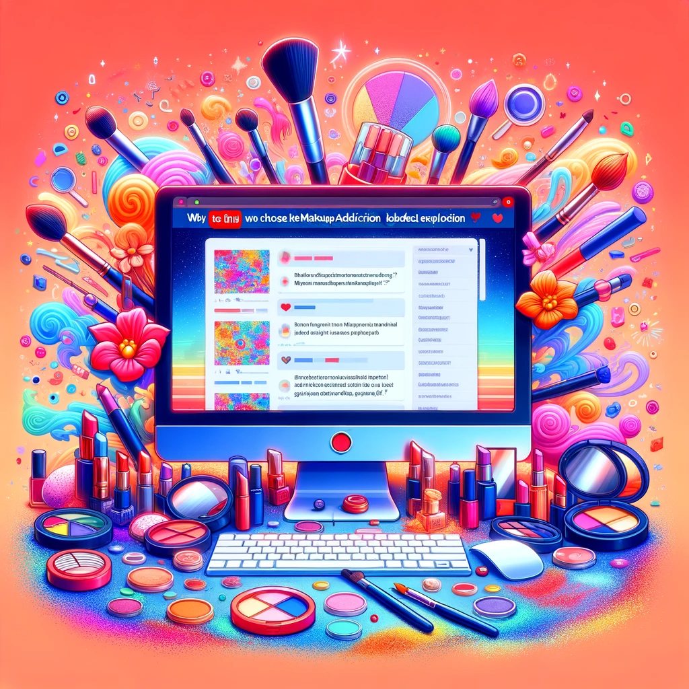

Background
Why We Chose the MakeupAddiction Subreddit for Exciting Data Exploration?
The MakeupAddiction subreddit is like a beauty treasure chest, packed with interesting stories and insights about makeup, skincare, and self-care. It’s a lively online community where beauty enthusiasts share their thoughts and experiences.
Here’s why we picked this subreddit for our exciting data adventure:
In short, the MakeupAddiction subreddit is a goldmine of insights into the beauty and self-care world. It’s not just about data; it’s about understanding what makes the beauty community tick. By diving into this data, we’ll make sure we’re on top of the beauty game and can serve our users in the best possible way.
In our endeavor to effectively manage the extensive datasets associated with the “MakeupAddiction” subreddit, which encompasses both submission and comments datasets, we have implemented a series of data preprocessing steps. These measures are designed to enhance the overall quality of our data and ensure that subsequent data analysis tasks are performed efficiently and accurately.
One of the initial steps in data preprocessing involved the removal of columns with a significant number of missing values. This was done to eliminate noise and enhance the overall data quality, ensuring that our analyses are based on reliable and complete information.
In terms of data temporality, we narrowed our focus to records spanning the years 2021 to 2023. This temporal selection allows us to work with more recent and relevant data, ensuring that our analyses are reflective of the most current trends and insights within the “MakeupAddiction” subreddit.
To further streamline data processing and reduce computational complexity, we employed a random sampling technique on both the submission and comments datasets. By randomly selecting a subset of data, we effectively limited our dataset size to no more than 10,000 rows. This strategic downsizing enables more efficient data analysis while maintaining data representativeness.
These meticulous data preprocessing steps have been carefully undertaken to prepare a refined and manageable dataset for our subsequent data analysis tasks. By eliminating missing values, focusing on recent data, and employing random sampling, we have optimized our data for high-performance analytics, ensuring that our findings are both reliable and efficient.
Original Submission Dataset
| Variable | Description |
|---|---|
| adserver_click_url | String - URL for ad click. |
| adserver_imp_pixel | String - Pixel tracking link for ad display. |
| archived | Boolean - Indicates if the post is archived. |
| author | String - Author of the post. |
| author_cakeday | Boolean - Reddit “cakeday” status of the author, typically used to celebrate registration anniversaries. |
| author_flair_css_class | String - CSS class for author’s flair. |
| author_flair_text | String - Textual flair for the author. |
| author_id | String - Identifier for the author. |
| brand_safe | Boolean - Indicates whether the post content is brand-safe. |
| contest_mode | Boolean - Indicates if the post is in contest mode. |
| created_utc | Integer - Creation time of the post (in UTC timestamp). |
| crosspost_parent | Object - Contains information about the parent post if the post is a crosspost. |
| crosspost_parent_list | List - List of parent posts for crossposts. |
| disable_comments | Boolean - Indicates if comments are disabled. |
| distinguished | String - Indicates if the post was submitted by a specific user or an administrator. |
| domain | String - Domain of the post link. |
| domain_override | String - Override setting for the domain. |
| edited | Boolean - Indicates if the post has been edited. |
| embed_type | String - Type of embedded content. |
| embed_url | String - URL for embedded content. |
| gilded | Integer - Number of times the post has been awarded Reddit Gold. |
| hidden | Boolean - Indicates if the post is hidden. |
| hide_score | Boolean - Indicates whether the post score is hidden. |
| href_url | String - URL of the post link. |
| id | String - Unique identifier of the post. |
| imp_pixel | String - Pixel tracking link for ad display. |
| is_crosspostable | Boolean - Indicates if the post can be crossposted. |
| is_reddit_media_domain | Boolean - Indicates if the link is from a Reddit media domain. |
| is_self | Boolean - Indicates if the post is a self-post. |
| is_video | Boolean - Indicates if the post contains video content. |
| link_flair_css_class | String - CSS class for link flair. |
| link_flair_text | String - Text for link flair. |
| locked | Boolean - Indicates if the post is locked. |
| media | Object - Media information for the post. |
| media_embed | Object - Embedded media information. |
| mobile_ad_url | String - URL for mobile ad. |
| num_comments | Integer - Number of comments on the post. |
| num_crossposts | Integer - Number of times the post has been crossposted. |
| original_link | String - Original link. |
| over_18 | Boolean - Indicates whether the post content is suitable for users aged 18 and older. |
Original Comments Dataset
| Field | Description |
|---|---|
| id | The comment’s identifier, e.g., “dbumnq8” (String). |
| author | The account name of the poster, e.g., “example username” (String). |
| link id | Identifier of the submission that this comment is in, e.g., “t3 5l954r” (String). |
| parent id | Identifier of the parent of this comment, might be the identifier of the submission if it is a top-level comment or the identifier of another comment, e.g., “t1 dbu5bpp” (String). |
| created utc | UNIX timestamp that refers to the time of the submission’s creation, e.g., 1483228803 (Integer). |
| subreddit | Name of the subreddit that the comment is posted. Note that it excludes the prefix /r/. E.g., ’AskReddit’ (String). |
| subreddit id | The identifier of the subreddit where the comment is posted, e.g., “t5 2qh1i” (String). |
| body | The comment’s text, e.g., “This is an example comment” (String). |
| score | The score of the comment. The score is the number of upvotes minus the number of downvotes. Note that Reddit fuzzes the real score to prevent spam bots. E.g., 5 (Integer). |
| distinguished | Flag to determine whether the comment is made by the moderators or admins. “null” means not distinguished (String). |
| edited | Flag indicating if the comment has been edited. Either the UNIX timestamp that the comment was edited at, or “false”. |
| stickied | Flag indicating whether the submission is set as sticky in the subreddit, e.g., false (Boolean). |
| retrieved on | UNIX timestamp that refers to the time that we crawled the comment, e.g., 1483228803 (Integer). |
| gilded | The number of times this comment received Reddit gold, e.g., 0 (Integer). |
| controversiality | Number that indicates whether the comment is controversial, e.g., 0 (Integer). |
| author flair css class | The CSS class of the author’s flair. This field is specific to subreddit (String). |
| author flair text | The text of the author’s flair. This field is specific to subreddit (String). |
Selected and Created Variables (Interesting Variables) For EDA Analysis
We included the dummy variables “Skincare,” “Bodycare,” and “Makeup” to categorize and analyze specific content areas within the “MakeupAddiction” subreddit. These variables allow us to differentiate posts related to skincare, body care, and makeup, enabling focused analysis of user preferences, engagement levels, and trends within each of these beauty-related topics. This segmentation enhances our ability to conduct targeted analyses, identify prevalent content categories, and uncover unique patterns, ultimately contributing to a more comprehensive EDA of the subreddit.
The creation of the new variables “is_top_100_creator,” “is_peak_hours,” and “is_long_text” enriches our analysis of the subreddit. “is_top_100_creator” identifies influential users, aiding our study of their impact on the community. “is_peak_hours” helps us determine optimal posting times and provides insights into community activity patterns. “is_long_text” allows us to differentiate lengthy textual content, facilitating in-depth textual analysis. These variables offer a nuanced understanding of user behavior, content dynamics, and community engagement, enhancing the depth and comprehensiveness of our analysis.
In addition, we introduced dummy variables such as “skincare_product,” “skincare_product_brand,” “makeup_product,” and “makeup_product_brand.” These variables allow us to explore specific products within the skincare, makeup, and body care categories. Furthermore, they enable us to identify the brands associated with these products. This structured approach enhances the granularity of our analysis, enabling us to uncover patterns and preferences related to specific products and brands within each beauty category, providing a more detailed and insightful perspective on the “MakeupAddiction”
Add External New Variables
In our data analysis project, we have try to collect integrated external data related to Karma, which is a reflection of how much a Reddit user’s contributions mean to the community. We have introduced a new variable named “posting_karma” to our dataset, and this variable represents the Karma score of the author of each submission. This addition of Karma data enhances our dataset and offers valuable insights into the engagement and influence of Reddit users within the MakeupAddiction subreddit.
Adding “posting_karma” to our dataset is crucial for several reasons. Firstly, it allows us to assess user engagement and reputation within the Reddit community, providing insights into how their contributions are perceived. Higher Karma scores indicate more credibility and influence, making this variable valuable for brands, influencers, and content creators seeking to collaborate with influential voices. Moreover, it aids in analyzing the relationship between posting Karma and the popularity of submissions, offering actionable insights for content creation and engagement strategies. This addition also enables user profiling, content recommendation, influencer identification, and community insights, ultimately enriching our dataset and providing a comprehensive view of user engagement and influence, serving various strategic and analytical purposes.
EDA Variables Summary
| Variable | Description | Data Type |
|---|---|---|
| created_time (submission) | Creation time of the post (in UTC timestamp) | Integer |
| score (submission) | Score of the submission (upvotes minus downvotes) | Integer |
| over_18 (submission) | Indicates if the content is for users aged 18 and older | Boolean |
| num_comments (submission) | Number of comments on the submission | Integer |
| subreddit (submission) | Name of the subreddit where the submission is posted | String |
| author (submission) | Username or author’s name of the submission | String |
| title (submission) | Title of the submission | String |
| link_flair_text (submission) | Textual information related to link flair for the submission | String |
| crosspost_parent_list (submission) | List of parent posts for crossposts | List |
| controversiality (submission) | Level of controversy surrounding the submission | Integer |
| gilded (comments) | Number of Reddit Gold awards received by a comment | Integer |
| score (comments) | Score of a comment (upvotes minus downvotes) | Integer |
| is_video (submission) | Indicates if the submission contains video content | Boolean |
| media (submission) | Information about media content associated with the submission | Object |
| media_embed (submission) | Embedded media information related to the submission | Object |
| Skincare (dummy variable) | Presence or absence of “Skincare” category or attribute | Boolean |
| bodycare (dummy variable) | Presence or absence of “Bodycare” category or attribute | Boolean |
| Makeup (dummy Variable) | Presence or absence of “Makeup” category or attribute | Boolean |
| skincare_product (dummy variable) | Presence or absence of a skincare product | Boolean |
| skincare_product_brand (dummy variable) | Presence or absence of a skincare product brand | Boolean |
| makeup_product (dummy variable) | Presence or absence of a makeup product | Boolean |
| makeup_product_brand (dummy variable) | Presence or absence of a makeup product brand | Boolean |
| is_top_100_creator (New Variable) | Identification of top 100 creators | Boolean |
| is_peak_hours (New Variable) | Presence during peak hours or high activity times | Boolean |
| is_long_text (New Variable) | Signifies whether text content is considered long or extensive | Boolean |
| posting_karma (New Variable) | Posting karma of the author of the submission | Integer |
11 Data Science Topics
Exploratory
Cultivating Optimal Posting Strategies: Unveiling Makeup Trends on ‘MakeupAddiction’ for Influencers and Brands
- Business Goals:
- Technical Proposals:
Determine peak hours and identify seasonality trends and potential festival or holiday impacts for makeup-related content to guide influencers and brands about optimal posting times.
For the “MakeupAddiction” subreddit spanning 2021 to 2023, using “submissions” dataset, we’ll analyze daily posting trends. By extracting posting hours from the created_utc column, we can categorize and count posts during each hour and calculate their average scores. A combined line and bar graph by Plotly will then be generated: the line indicating hourly post volume and the bar showcasing average post scores. Using color distinctions—blue for volume and orange for engagement—the visualization will offer a succinct overview. Besides, we’ll extract dates from the created_utc column to analyze yearly posting patterns. Grouping the data by date, we’ll determine both the frequency of posts and their average scores. To effectively visualize these metrics, a dual-axis time-series plot will be employed: the primary y-axis will display post counts using bars, while the secondary y-axis will plot average scores as a line graph. This integrated view allows us to simultaneously gauge post volume and user engagement quality.
Unveiling Beauty Influencers: Identifying Top 10 Content Creators in the ‘MakeupAddiction’ Subreddit for Strategic Brand Collaborations
- Business Goals:
- Technical Proposal:
Identify the top 10 beauty content creators within the “MakeupAddiction” Reddit Communities, evaluating their impact and reach for potential brand partnerships and promotions.
Group the filtered and clean data by the author column. Sort and highlight the top ten creators with a weighted score system measuring popularity and frequency. Repeat the analysis for the years 2021, 2022, and 2023. We’ll produce an interesting summary, presenting the top ten creators, from 2021 to 2023, as well as their detailed information. (Popularity will be determined using a combination of the score and num_comments columns. The frequency will be gauged by counting the number of posts each author has made.)
Visual Impact: Analyzing the Influence of Visual Content on User Engagement in the ‘MakeupAddiction’ Subreddit (2021-2023)
- Business Goals:
- Technical Proposal:
Assess the Impact of Visual Content on User Engagement and Popularity in the “MakeupAddiction” Subreddit Within the extensively visual domain of cosmetics and aesthetics, imagery assumes a pivotal function in engendering discourse and attracting attention. From 2021 to 2023, we intend to conduct a comprehensive analysis of the effect that visual elements (gifs, videos, and images) in subreddit posts have on key performance indicators of user engagement and notoriety. The results of this research endeavor will ascertain whether visual content increases engagement, stimulates additional comments, and produces higher scores. By leveraging these insights, content creators, influencers, and brands will be able to strategically integrate visual components into their posts, thereby increasing their visibility and impact within the “MakeupAddiction” community.
Perform an exhaustive data extraction from the “MakeupAddiction” subreddit encompassing the years 2021–2023, ensuring that essential variables including post ID, URL, score, comment count, timestamp, and domain are isolated. Construct an algorithm that categorizes posts according to the existence of visual content, potentially utilizing image recognition libraries. Conduct a comprehensive statistical analysis, incorporating a t-test and ANOVA, to investigate variations in engagement. Subsequently, employ a time-series analysis to identify patterns or trends. Construct an interactive interface featuring sophisticated data visualizations to present these observations and devise specific suggestions for enhancing the subreddit’s visual content strategy.
Analyzing User Engagement and Behavior: Uncovering Demographic Differences in the MakeupAddiction Subreddit (2021-2023)
- Business Goals:
- Technical Proposal:
The overarching business goal of this data scientist’s inquiry is to conduct a comprehensive examination of the dataset derived from the makeupaddiction subreddit, with a deliberate emphasis on the ‘Over_18’ indicator. The specific objectives are to discern the variations in user engagement and comment activity between adult individuals (Over 18) and their younger counterparts (Under 18).By pursuing this investigation, the aim is to derive nuanced insights into the distinct behavioral patterns, preferences, and trends exhibited by these demographic segments within the subreddit’s user base. Such insights are strategically crucial for businesses, advertisers, and subreddit moderators seeking to optimize their strategies, content, and policies to better resonate with and cater to these differing audience segments, thereby enhancing the efficacy of their operations and engagement within the makeupaddiction community.
In our data analysis project, we focus on the MakeupAddiction subreddit, concentrating on data spanning from 2021 to 2023. To manage the vast dataset efficiently, we have chosen a focused approach, opting for a subdataset consisting of 10,000 randomly selected rows from the larger dataset. This streamlined dataset allows us to perform exploratory data analysis (EDA) more effectively Our first step in data preprocessing involves essential tasks like data cleaning, tidying, and handling missing values, ensuring the dataset is ready for analysis.The central objective of our analysis is to gauge the level of engagement and participation within the MakeupAddiction subreddit, distinguishing between adults and minors. To achieve this, we intend to gather statistical information regarding the number of comments and scores contributed by these two distinct groups in the forum. This endeavor will offer us valuable insights into the distinct needs and preferences of these demographic segments.
NLP
Evaluating Influencers’ Emotional Impact: Sentiment Analysis of Comments on the Top 10 Creators’ Submissions in the MakeupAddiction Subreddit
- Business Goals:
- Technical Proposal:
Following the exploratory task of identifying the top 10 creators, we move on to assess the sentiment of comments in their submissions to gauge the overall emotional tone of Reddit users towards these influencers. This will provide further and more scientific insights into the influencers’ impact on their audience.
Utilize NLP libraries like NLTK, and preprocess the text data, including tokenization, removing stop words, and lemmatization. Apply sentiment analysis to the preprocessed comments to determine their emotional tone. Calculate sentiment scores for each comment to quantify the intensity of emotions. Aggregate the sentiment scores of comments for each influencer. Visualize the sentiment analysis results using charts or graphs to provide a clear understanding of influencers’ emotional impact.
Unlocking Positivity: Sentiment Analysis of ‘Hot Sensitive Topics’ in the MakeupAddiction Subreddit for Enhanced User Engagement and Brand Strategies
- Business Goals:
- Technical Proposal:
The objective is to gauge the sentiment and community reception of content within the top 100 tags with the most comments on the “MakeupAddiction” subreddit, identified as “Hot sensitive topics.” Understanding the sentiment distribution, especially the proportion of positive attitudes, will empower creators, moderators, and brands to Adjust their content creation to align with positively received topics, enhancing user engagement and satisfaction. Brands can position their products and messages in a way that resonates positively with the subreddit’s community. Moderators can identify potential areas of contention or exceptionally positive topics, aiding in community management and policy development. Gain insights into current trends and consumer mood, informing marketing strategies and product development.
To achieve the outlined business goals, we propose the following technical approach:Pull submissions data from the “MakeupAddiction” subreddit, focusing on posts tagged with the top 100 tags with the most comments, which constitute “Hot sensitive topics.” Then Utilize Natural Language Processing (NLP) tools to perform sentiment analysis on the title and body of submissions. This will involve preprocessing text data to remove noise and normalize text, employing sentiment analysis algorithms, like VADER or TextBlob, which are particularly adept at handling social media text and classifying sentiment into categories such as positive and negative.Calculate the proportion of posts that exhibit a positive sentiment within each hot topic tag, providing a sentiment distribution profile.Refine the existing Gradient Boosted Regressor model by incorporating sentiment scores as an additional feature, enhancing the predictive power regarding post popularity. Evaluate the effectiveness of sentiment analysis using accuracy, precision, recall, and F1 score. Assess the improved popularity prediction model using RMSE to ensure the sentiment integration contributes positively to prediction capability. By systematically implementing this sentiment analysis, stakeholders can align their strategies with the positive dynamics of the community, potentially leading to increased engagement, improved brand perception, and more effective community management.
Elevating Beauty Brands: NLP Analysis of Top Brands and Sentiment in ‘Skincare,’ ‘Makeup,’ on MakeupAddiction (2021-2023)
- Business Goals:
- Technical Proposal:
The objective is to leverage Natural Language Processing (NLP) techniques to identify the top 5 most discussed brands within the “Skincare,” “Makeup,” and “Bodycare” categories on the MakeupAddiction forum. Furthermore, we aim to conduct sentiment analysis on comments associated with each post to gauge whether the sentiment expressed is positive or negative towards these brand products. The goal is to provide actionable insights for the beauty industry, helping brands understand consumer sentiments and popular products in these categories, ultimately improving their marketing strategies and product development to meet customer demands.
The data collection process involves gathering information from the MakeupAddiction subreddit for the years 2021-2023, focusing on key columns such as ‘subreddit,’ ‘selftext,’ ‘title,’ and ‘num comments’ while also collecting connected comments for each submission. Following data preprocessing to address missing values and eliminate irrelevant information, comments are grouped by post ID to establish connections between posts and their respective comments. Three dummy variables are created for the categories “Skincare,” “Makeup,” and “Bodycare,” with ‘1’ assigned to the appropriate category and ‘0’ for others. Brand names are extracted from post content, titles, and comments using NLP techniques, and their occurrences within each category are counted. Sentiment analysis is implemented to determine the positive or negative sentiments expressed in comments, with sentiment scores assigned to each comment (positive, negative, or neutral). The data from the three categories is integrated into a single dataset, considering posts with dummy variables, and sentiment analysis results are combined with the posts and comments. Finally, the analysis phase identifies the top 5 most discussed brands in each category by counting mentions and examines sentiment scores to gauge the sentiment of comments towards these brands.
Evolving Language of Beauty: Diachronic Linguistic Analysis of ‘MakeupAddiction’ Subreddit (2021-2023)
- Business Goals:
- Technical Proposal:
Language serves as more than a mere means of communication in the ever-evolving realm of beauty and cosmetics; it also serves as an indicator of consumer preferences, cultural changes, and emerging trends. The aim of this study is to analyze the linguistic terrain of the “MakeupAddiction” subreddit, tracing the development of colloquialisms and terminology utilized in the cosmetics community between 2021 and 2023. By looking at the rise, fall, and possible demise of certain words, we hope to create a linguistic mirror that shows how the cosmetics industry has changed in a broader sense. These observations can assist brands, influencers, and enthusiasts in comprehending the changing preferences of the community and remaining informed about the most recent terminology.
Preserve and cleanse all pertinent textual information contained in the “MakeupAddiction” subreddit remarks and posts within the allotted time period. Incorporate NLP methodologies, such as tokenization and lemmatization, to facilitate text normalization. Use TF-IDF to do an industry-specific diachronic linguistic analysis to find and connect important changes in terminology that have happened over time. Deliver conclusions using dynamic visual representations and produce a report that interprets linguistic shifts in order to provide industry stakeholders with strategic insights. Develop, if desired, a predictive model for predicting forthcoming trends in language pertaining to cosmetics.
Machine Learning
Predicting Post Popularity on ‘MakeupAddiction’ for Enhanced Engagement Strategies
- Business Goals:
- Technical Proposal:
Enhance the reach and impact of content shared on “MakeupAddiction” by predicting the popularity of posts, thus enabling creators and brands to engage more effectively with their audience.
The goal is to augment the reach and influence of content on the “MakeupAddiction” subreddit by predicting post popularity. This will allow creators and brands to more effectively engage with their audience by tailoring content strategies according to predicted engagement levels. To achieve this, we will extract and engineer several features from our dataset: Post Length: We will calculate the length of the post from the body column. Makeup Theme: The author_flair_text will be utilized to determine the makeup theme associated with a post. Posting Hour: Extract the hour from the created_utc to identify peak engagement times. Categorical Features: We will create dummy variables for categorical data representing various themes and topics such as ‘skincare’, ‘makeup’, ‘beauty’, ‘styles’, ‘bodycare’, ‘haircare’, ‘facial’, ‘cosmetics’, ‘sunscreen’, ‘bodypaint’. This will allow the model to differentiate posts based on these categories effectively. Creator Popularity: The ‘is_top_100_creator’ dummy variable will indicate whether the post was made by one of the top 100 creators in the subreddit. Peak Hours: The ‘is_peak_hours’ variable will flag posts created during times of historically high engagement. Text Length: The ‘is_long_text’ variable will indicate if a post contains a longer than average text body, which could impact engagement. A Gradient Boosted Regressor and other will be employed as the supervised regression model, trained on these features with the objective of predicting the score of a post, which serves as our popularity metric. We will partition the data into training and validation sets to evaluate the model’s generalizability. Performance will be assessed using the root-mean-square error (RMSE) metric, which measures the average magnitude of the errors between predicted and actual values. Lower RMSE scores will be indicative of more accurate predictions of post popularity. Upon achieving satisfactory performance, the predictive model will be deployed as a tool for creators and brands, providing them with actionable insights on the potential popularity of their upcoming content on “MakeupAddiction.” This strategy aims to optimize engagement by aligning content creation with data-driven predictions.
Elevating User Experience: Enhanced Post Classification for Personalized Content Discovery in ‘MakeupAddiction’ Subreddit
- Business Goals:
- Technical Proposal:
Navigating the enormous ocean of social media content, users frequently encounter difficulties in promptly locating content that corresponds to their interests. Our aim is to enhance the user experience on the “MakeupAddiction” subreddit through the development of a sophisticated system for classifying posts. Our objective is to enhance community engagement, optimize content discovery, and achieve this by accurately classifying posts according to their content, user interaction, and other relevant metadata. It is anticipated that this endeavor will result in increased user contentment, longer platform sessions, and improved user retention through the presentation of a more structured and personalized content environment.
It is possible to make a supervised machine learning model that is great at accurately classifying posts by using a mix of textual and metadata features, like post titles, content, user interaction data, and other relevant subreddit metadata. In order to efficiently process textual information, the model will be trained utilizing natural language processing (NLP) techniques, including TF-IDF and word embeddings. It will subsequently be assessed using standardized classification metrics. Once the performance of the classifier has been optimized, it will be incorporated into the infrastructure of the subreddit along with a feedback mechanism that ensures the model is continually enhanced in response to user input.
Fostering Engagement and Understanding: Analyzing the Relationship Between Comment Controversiality and User Interaction in the ‘MakeupAddiction’ Subreddit (2021-2023)
- Business Goals:
- Technical Proposal:
The business goal of this data science question is to enhance user engagement and content understanding on a platform (like Reddit) by analyzing the relationship between comment controversiality and engagement. This involves identifying the impact of controversial comments on views and interactions. Additionally, the goal is to discover common hot topics within controversial discussions, examining scores and stickied status to gauge content relevance. Furthermore, the aim is to predict the topics and level of engagement in forum posts, providing valuable insights for content curation and platform improvement. Ultimately, the overarching business goal is to optimize user experience, increase user engagement, and provide actionable insights for content management and platform growth.
In this comprehensive data analysis project, we focus on the MakeupAddiction subreddit, specifically examining comments from 2021 to 2023. The dataset, sourced from Reference, offers a wealth of insights. To manage this extensive dataset, we begin by extracting a manageable subdataset containing 10,000 random rows. Our data preprocessing phase ensures cleanliness by addressing missing values, duplicates, and irrelevant content, in addition to converting UNIX timestamps into human-readable datetime formats. We also group comments by topics or threads using link IDs and parent IDs.Our exploratory data analysis (EDA) entails visually representing data through histograms, box plots, and other graphical elements to gain a better understanding of comment scores, controversiality, and engagement metrics. This phase also involves calculating essential statistics like means, medians, and quantiles to reveal score and controversiality distributions. Further visualization, such as scatter plots and heatmaps, will help expose relationships between variables, including the correlation between scores and controversiality.Hypothesis testing will be integral, enabling us to formulate and validate or refute hypotheses such as “Controversial comments attract more engagement.” To do this, we will employ significance tests like t-tests or ANOVA to compare engagement metrics between controversial and non-controversial comments. We’ll harness natural language processing (NLP) techniques to unveil common hot topics in controversial content. Techniques such as Latent Dirichlet Allocation (LDA) or Non-Negative Matrix Factorization (NMF) will be employed.The project will also dive into time-series analysis to explore the correlation between posting time and comment author behavior, thus uncovering engagement patterns based on posting times. Finally, predictive modeling, such as text classification or regression, will be implemented to forecast topics and engagement levels for forum posts. Through these stages, we anticipate gaining valuable insights into the relationship between controversiality, views, and engagement, ultimately enhancing our understanding of this dynamic online community.